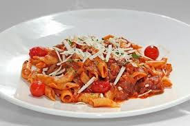

On the 4th of September you will learn about E=MC2.
The amount of CO2 and H2O in the atmosphere grew by 2ppm in 20091.
Did you ever stop to think, and forget to start again?
As A.A. Milne said, Some people talk to
animals. Not many listen though. That's the
problem.
742 Evergreen Terrace, Springfield.
Molly had been staring out of her window for about an hour now. On her desk, lying between the copies of Nature, New Scientist, and all the other scientific journals her work had appeared in, was a well thumbed copy of On The Road. It had been Molly's favorite book since college, and the longer she spent in these four walls the more she felt she needed to be free.
She had spent the last ten years in this room,
sitting under a poster with an Oscar Wilde quote
proclaiming that Work is the refuge of
people who have nothing better to do
. Although
many considered her pioneering work, unraveling
the secrets of the llama DNA, to be an
outstanding achievement, Molly diddiddid think
she had something better to do.
Here are food . Try it , you know what i mean
